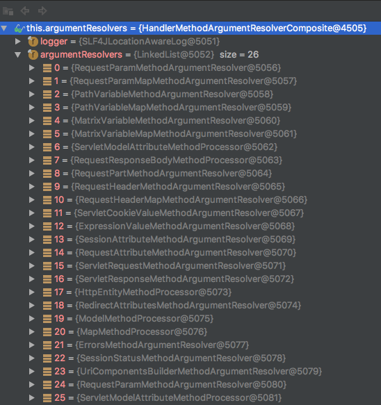
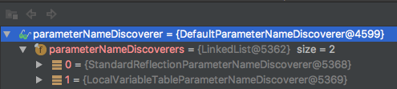
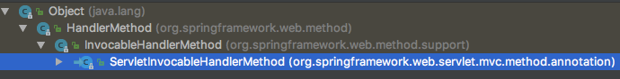
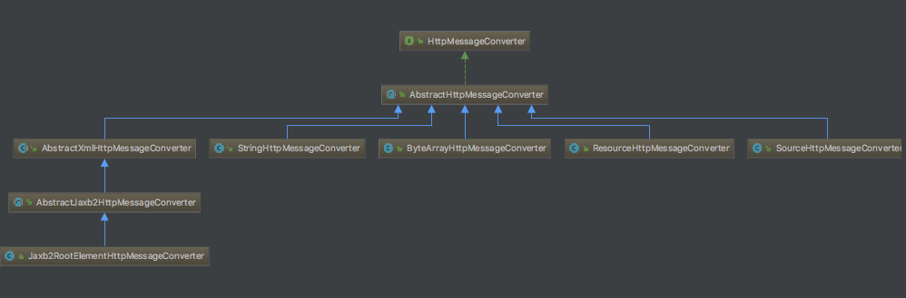
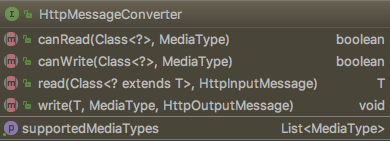

spring mvc的http请求代码分析
一个最简单的GET请求
先执行一次最简单的http GET请求
指定profile为withoutJackson，配置并启动tomcat，端口8080，在postman中发送一个GET请求，url为localhost:8080/java/get?str=java。得到hello world: scala
查看控制台（log level已设置为trace，去掉一些无用log）
|
|
跟着日志我们来走一遍spring的DispatcherServlet从接受请求到响应的过程
DispatcherServlet
spring mvc接受http请求的入口是DispatcherServlet类的doDispatch方法，
mappedHandler = getHandler(processedRequest)
根据请求中地址找到对应的Controller方法（这些信息在servlet启动时已经加载）和HttpServletReqeust对象，装配一个HandlerExecutionChain，chain由路径指向的Controller 和一组拦截处理器组成，对应log日志中的如下信息：
|
|
HandlerAdapter ha = getHandlerAdapter(mappedHandler.getHandler());
返回一个适配Controller的处理器，默认的处理器有三种:
- RequestMappingHandlerAdapter
- HttpRequestHandlerAdapter
- SimpleControllerHandlerAdapter
返回第一个支持的HandlerAdapter，这里是RequestMappingHandlerAdapter。
对应的log中的如下信息：
|
|
mv = ha.handle(processedRequest, response, mappedHandler.getHandler());
这行代码是实际处理reques请求的调用入口，将由RequestMappingHandlerAdapter完成调用任务
RequestMappingHandlerAdapter
先来看一下RequestMappingHandlerAdapter的类说明注释
RequestMappingHandlerAdapter适配所有用@RequestMapping注解的类和方法。当http请求找到url对应的controller后，RequestMappingHandlerAdapter类会调用invokeHandlerMethod方法
ServletInvocableHandlerMethod invocableMethod = createInvocableHandlerMethod(handlerMethod);
创建一个ServletInvocableHandlerMethod类，这个类继承自InvocableHandlerMethod类，具有处理返回值的能力。
invocableMethod.setHandlerMethodArgumentResolvers(this.argumentResolvers);
设置参数解析器集合HandlerMethodArgumentResolverComposite，其内部有一个HandlerMethodArgumentResolver链表，spring mvc默认的参数解析器有26个，如图：

invocableMethod.setHandlerMethodReturnValueHandlers(this.returnValueHandlers);
设置返回值处理器集合HandlerMethodReturnValueHandlerComposite，其内部有一个HandlerMethodReturnValueHandler链表，spring mvc默认的返回值处理器有15个，如图：

invocableMethod.setDataBinderFactory(binderFactory);
设置与@InitBinder有关的注解
invocableMethod.setParameterNameDiscoverer(this.parameterNameDiscoverer);
设置参数名发现器ParameterNameDiscoverer，其内部有一个ParameterNameDiscoverer链表，默认的有2个，如图：

invocableMethod.invokeAndHandle(webRequest, mavContainer);
ReqeustMappingHandlerAdapter将http请求处理交给ServletInvocableHandlerMethod类做处理,由它完成参数请求参数赋值、调用Controller和返回参数转换，
ServletInvocableHandlerMethod
类继承图：

前面讲过ServletInvocableHandlerMethod增加了处理返回值的能力，在方法invokeAndHandle中，它会调用父类中的invokeForRequest方法获得Controller中待调用方法的参数值并使用反射调用方法，再处理返回值。
InvocableHandlerMethod
|
|
在InvocableHandlerMethod类中我们关注两个方法
- invokeForRequest
在获得Controller方法的参数值后调用Controller方法，参数值通过HandlerMethodArgumentResolver方法解析器来解析 - getMethodArgumentValues
从当前request中获得方法参数值，通过HandlerMethodArgumentResolverComposite中的supportParameter方法，从HandlerMethodArgumentResolver链表中找到一个支持的解析器，并将它放在一个Map中缓存起来，加快一次读取。给出主要代码块1234567891011121314151617181920/*** Find a registered {@link HandlerMethodArgumentResolver} that supports the given method parameter.*/private HandlerMethodArgumentResolver getArgumentResolver(MethodParameter parameter) {HandlerMethodArgumentResolver result = this.argumentResolverCache.get(parameter);if (result == null) {for (HandlerMethodArgumentResolver methodArgumentResolver : this.argumentResolvers) {if (logger.isTraceEnabled()) {logger.trace("Testing if argument resolver [" + methodArgumentResolver + "] supports " +parameter.getGenericParameterType() + "]");}if (methodArgumentResolver.supportsParameter(parameter)) {result = methodArgumentResolver;this.argumentResolverCache.put(parameter, result);break;}}}return result;}
前面说到HandlerMethodArgumentResolverComposite是由26个参数解析器组成，在本次请求中，满足支持的解析器是RequestParamMethodArgumentResolver，对应的log日志：
找到解析器后调用解析器的resolveArgument方法，获得参数值。对应的log日志：
至此从request请求中获取方法参数值的主要过程结束。
完成controller方法调用后对应日志：
this.returnValueHandlers.handleReturnValue(returnValue, getReturnValueType(returnValue), mavContainer, webRequest);
处理返回值，从HandlerMethodReturnValueHandlerComposite中的HandlerMethodReturnValueHandler链表找到第一个匹配的处理器类，本次请求匹配的处理器类是RequestResponseBodyMethodProcessor,并交予RequestResponseBodyMethodProcessor处理返回值
RequestResponseBodyMethodProcessor
|
|
继承自AbstractMessageConverterMethodProcessor，处理@RequestBody和@ResponseBody的注解。
观察已经获得的日志
我们会发现一个StringHttpMessageConverter类，从名字可以猜到，这是一个转换String类型的http message的类。跟踪一下继承结构：

接口HttpMessageConverter，这是一个策略接口，定义将http请求体或响应体转换成指定的数据类型，接口定义如下：

接口解释
| Modifier and Type | Method | Description |
|---|---|---|
| boolean | canRead(Class<?> clazz,MediaType mediaType) | Indicates whether the given class can be read by this converter. |
| boolean | canWrite(Class<?> clazz, MediaType mediaType) | Indicates whether the given class can be written by this converter. |
| T | read(Class<? extends T> clazz,HttpInputMessage inputMessage) | Read an object of the given type from the given input message, and returns it. |
| void | write(T t, MediaType contentType, HttpOutputMessage outputMessage) | Write an given object to the given output message. |
| List |
getSupportedMediaTypes() | Return the list of MediaType objects supported by this converter. |
从继承图上可以看到有多个HttMessageConverter实现类。了解这些后回到程序，刚刚程序已经拿到了方法调用的返回值了，RequestResponseBodyMethodProcessor会调用父类中的writeWithMessageConverters方法，这个方法中有一个for 循环
遍历所有Converters，在本次请求中符合条件的就是StringHttpMessageConverter转换器类。
到这里reqeust请求结束